O bolo de cenoura com cobertura de chocolate é uma das receitas mais tradicionais da culinária brasileira. Fácil de preparar e muito saboroso, é ideal para o café da manhã ou lanche da tarde.
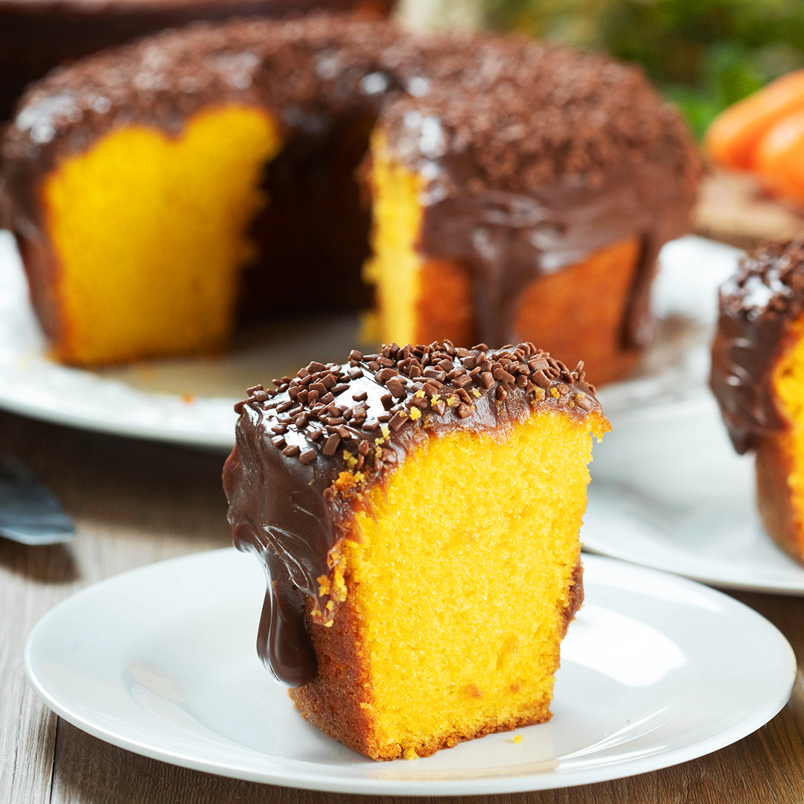
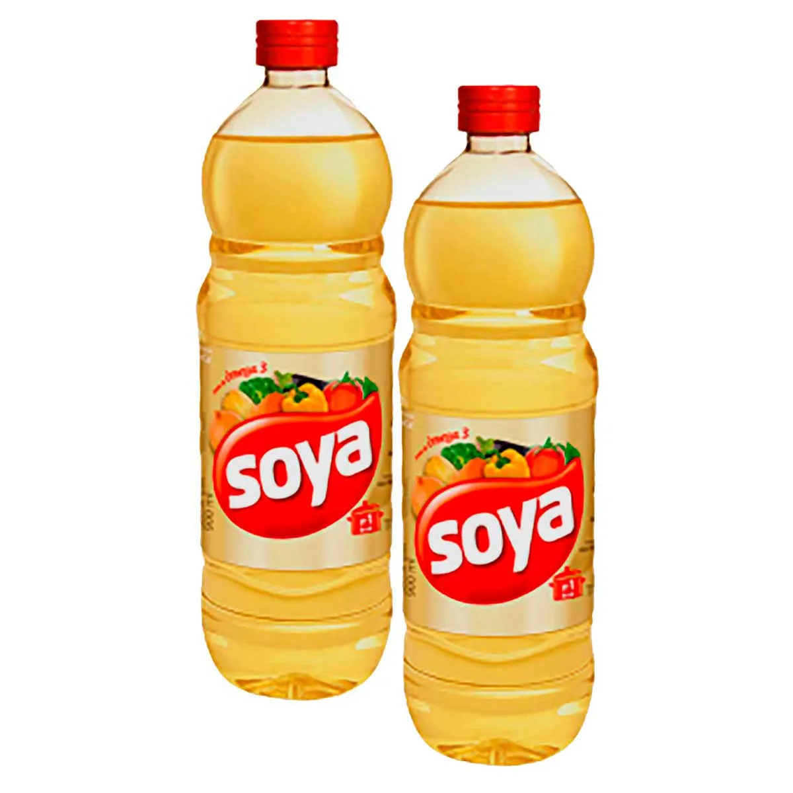
1 xícara de óleo de soja - Comprar Óleo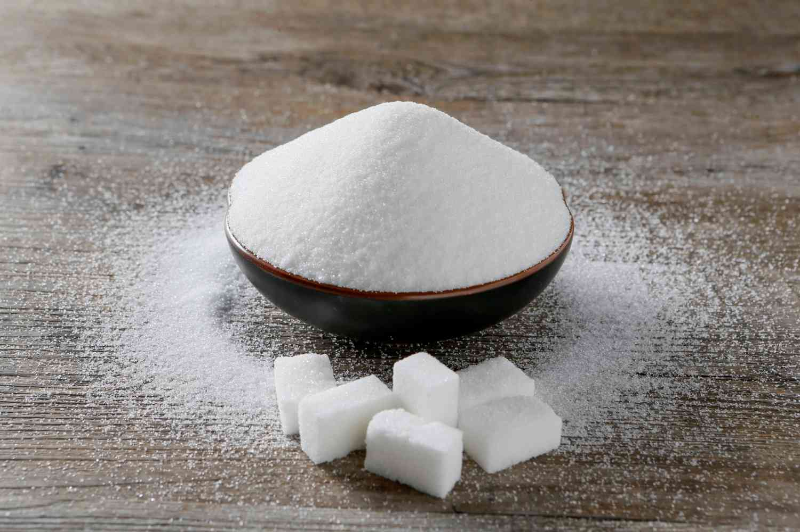
2 xícaras de açúcar - Comprar Açúcar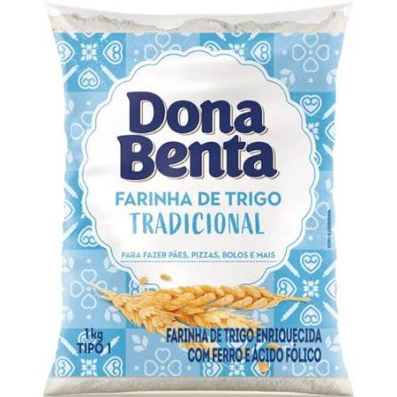
2 e 1/2 xícaras de farinha de trigo - Comprar Farinha de Trigo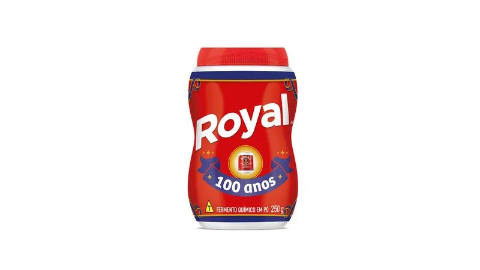
1 colher de sopa de fermento químico - Comprar Fermento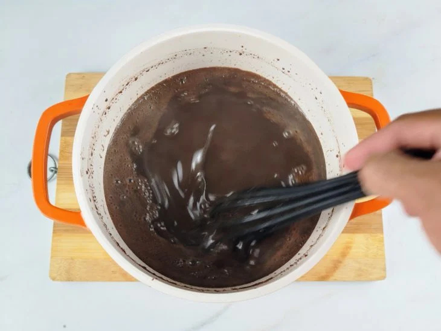
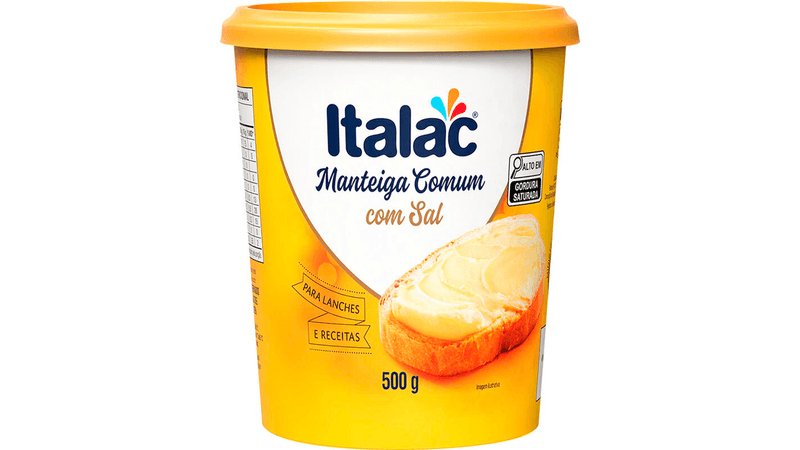
1 colher de sopa de manteiga - Comprar Manteiga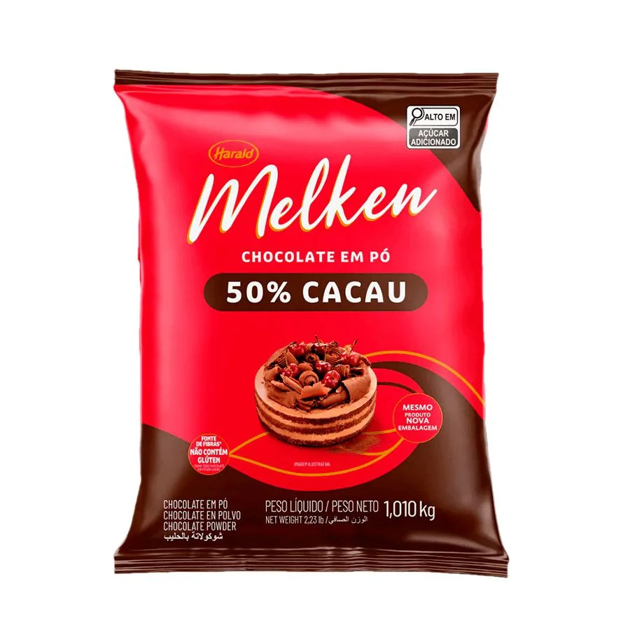
3 colheres de sopa de chocolate em pó - Comprar Chocolate em Pó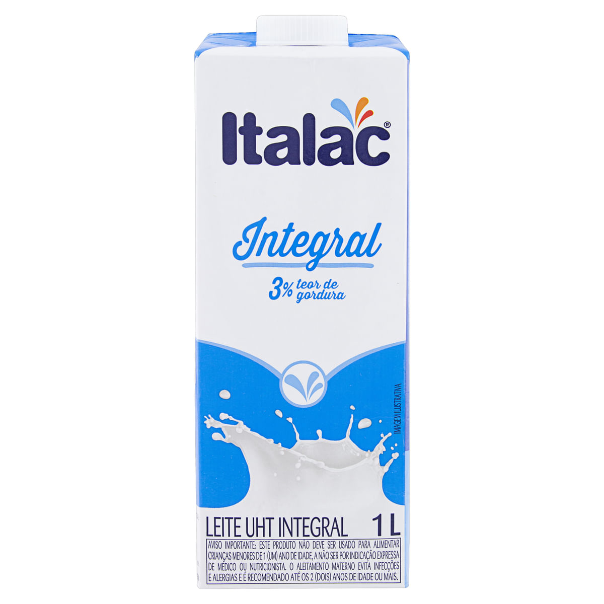
5 colheres de sopa de leite - Comprar Leite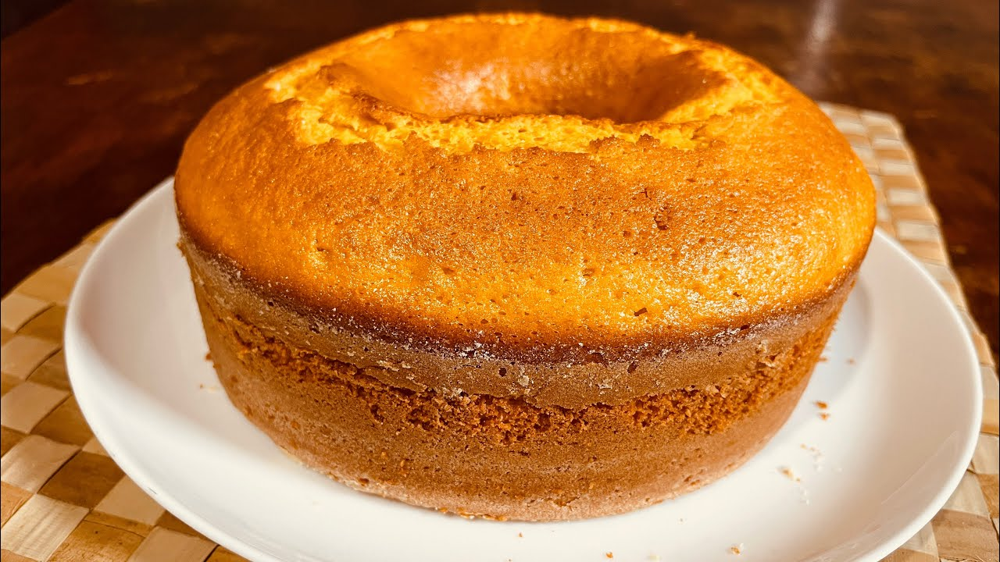
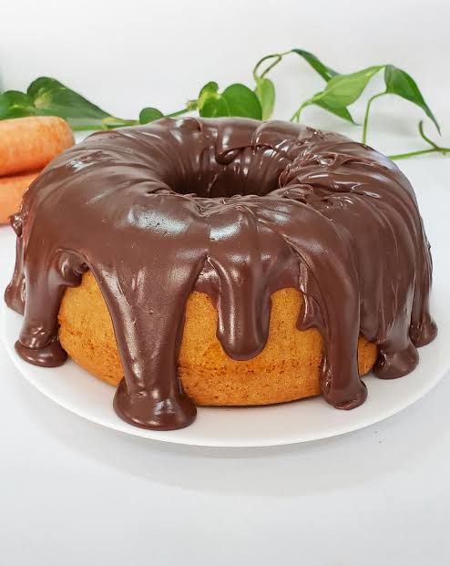
O bolo de cenoura com cobertura de chocolate está pronto para servir. Aproveite esta deliciosa receita com sua família e amigos.